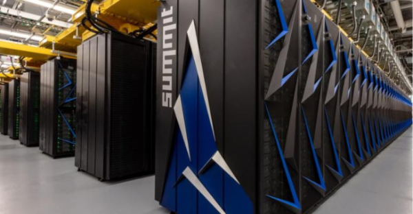
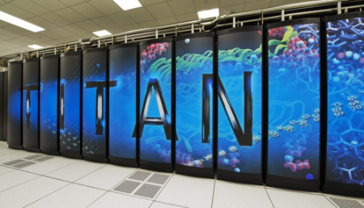

Supercomputing with CUDA
To see how seriously powerful CUDA is for accelerating computations, we needn’t look further than some of the world’s fastest supercomputers. In 2015, 10% of the world’s fastest super computers were equipped with Nvidia GPUs.
Among these behemoths of computational power is the Summit supercomputer residing at the Oak Ridge National Laboratory in Tennessee and developed by Cray Inc of supercomputing history and geek fame. The Summit supercomputer cost $325 million dollars to construct and hosts 27,648 Nvidia Tesla V100 GPUs! As of June 2018, Summit is the world’s fastest supercomputer, and the first supercomputer to reach exa-scale processing speeds of 1.88 exaflops. It was contracted to be built by IBM and Nvidia by the United States Dept. of Energy.
Summit is the successor to the Titan supercomputer, also hosted at Oak Ridge. Titan also uses GPUs to achieve supercomputing speeds, and was also the world’s fastest computer at the time of its construction by Cray Inc.